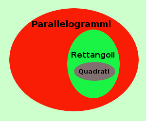
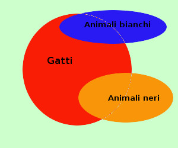

|
Anche qui vediamo un giudizio vero ed uno falso Dimostriamo la validita' (o meno) del sillogismo: 
mediante i diagrammi di Eulero-Venn L'insieme dei quadrati e dei parallelogrammi hanno elementi in comune (vero: l'insieme dei quadrati e' addirittura contenuto nell'insieme dei parallelogrammi) l'insieme dei rettangoli ha elementi comuni coll'insieme dei parallelogrammi (vero: l'insieme dei rettangoli e' addirittura contenuto nell'insieme dei parallelogrammi) quindi otteniamo la figura a destra ed il ragionamento e' valido avendo l'insieme dei quadrati e l'insieme dei rettangoli degli elementi comuni (l'insieme dei quadrati e' addirittura contenuto nell'insieme dei rettangoli) Vediamo anche un esempio di sillogismo non valido: 
qualche gatto e' un animale di colore bianco significa: { gatti }∩{ animale di colore bianco} ≠ Ø qualche gatto e' un animale di colore nero significa: { gatti } ∩ { animale di colore nero } ≠ ∅ qualche animale dicolore nero e' un animale di colore bianco { animale di colore nero } ∩ { animale di colore bianco } ≠ Ø falso e siccome gli animali di colore nero e di colore bianco non hanno elementi comuni il ragionamento e' falso mediante i diagrammi di Eulero-Venn i 3 giudizi dicono: L'insieme dei gatti ha elementi comuni con l'insieme degli animali bianchi vero L'insieme dei gatti ha qualche elemento in comune con l'insieme degli animali neri vero L'insieme degli animali neri e l'insieme degli animali bianchi hanno qualche elemento in comune falso Otteniamo la figura a destra ed il ragionamento non e' valido essendo l'insieme degli animali neri e l'insieme degli animali bianchi disgiunti |